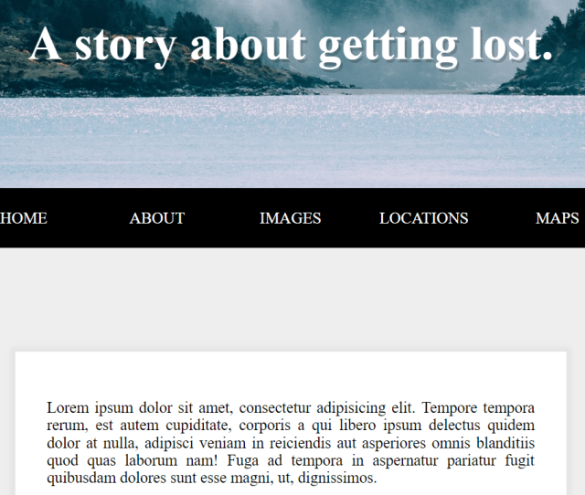

24 — Sticky Nav

主題
透過CSS的position:fixed與JavaScript的classList來製作網站常見的置頂選單。
Sticky Nav
Github
步驟
Step1. 取得頁面元素並偵測選單到頂部的高度
1
2
3
4
| // 取得nav元素
const nav = document.querySelector('#main');
// 透過offsetTop取得nav頂部到整個page的頂部距離
let topOfNav = nav.offsetTop;
|
Step2. 對CSS增加樣式fixed-nav
1
2
3
4
5
6
7
8
9
10
11
12
13
| /* 當有fixed-nav時，把site-wrap縮放回1，讓整體有放大效果*/
.fixed-nav .site-wrap {
transform: scale(1);
}
/* 當有fixed-nav時，把nav改為fixed並加上陰影*/
.fixed-nav nav {
position: fixed;
box-shadow: 0 5px rgba(0,0,0,0.1);
}
/* 當有fixed-nav時，把logo寬度增加，使其顯示出來*/
.fixed-nav li.logo {
max-width: 500px;
}
|
Step3. 進行網頁捲軸高度偵測，決定是否變更選單樣式
1
2
3
4
5
6
7
8
9
10
11
12
13
14
15
16
| function fixNav() {
// 如果目前捲軸的高度高過於nav的頂部
if (window.scrollY >= topOfNav) {
/* 設定一個padding-top並增加fixed-nav
因為當position被設定為fixed時，將不會再佔據原有的高度
所以要動態的增加一個offsetHeight來將內容部位增高避免怪異的彈跳遮擋現象 */
document.body.style.paddingTop = nav.offsetHeight + 'px';
document.body.classList.add('fixed-nav');
} else {
// 還原padding-top並移除fixed-nav
document.body.style.paddingTop = 0;
document.body.classList.remove('fixed-nav');
}
}
// 監聽scroll動作
window.addEventListener('scroll', fixNav);
|